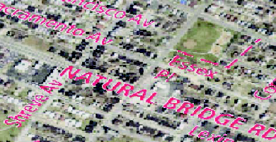
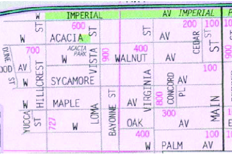

| Map Extraction | |||
| Raster maps are widely available for areas around the globe and are an important source of geospatial data. Comparing to other geospatial data, raster maps are easily accessible and provide geographic features that are difficult to find elsewhere, such as landmarks in historical maps. For example, the tourist map found using an image search engine on the Internet shown in Figure 1(a) contains location information such as the gas stations, hotels, and road names of Tehran, Iran, while the hybrid view from Google Map shown in Figure 1(b) only shows major roads and their labels. | |||
 (a) A tourist map found on the Internet |
 (b) The hybrid view of Tehran from Google Maps |
||
| Figure 1: The tourist map contains rich information that is difficult to find elsewhere for the city of Tehran, Iran | |||
We can exploit the geographic features in raster maps (e.g., roads, text labels, etc.) to provide additional knowledge for viewing and
understanding other geospatial data. For example:
|
|||
 (a) Fusing a tourist map with imagery |
 (c) Extract roads with road-intersection templates |
||
|  (b) Labeling roads in imagery with the text layer from a map |
|||
| Figure 2: Exploiting information in raster maps for imagery understanding | |||
Harvesting the geographic features in raster maps is a challenging task because of:
|
|||
| Map Decomposition Techniques | |||
We developed two map decomposition techniques, each requiring a different amount of user input to first decompose raster maps with varying image quality into individual layers of geographic features.
|
|||
| Feature Recognition Techniques | |||
| We also developed techniques to convert the feature layers into machine-editable map context, such as extracting the road-intersection templates and road vector data from a road layer [Chiang and Knoblock, 2008, 2009b; Chiang et al., 2005, 2008]. For the text layer, we plan to develop an automatic technique that identifies strings in the text layer and employs an optical character recognition (OCR) component to translate the text strings into machine-editable text. | |||
| Map Imagery Alignment Techniques | |||
| Since roads are a common geographic feature that exists across many geospatial data, the recognized road vectors can be used as a matching feature to align the raster map, the extracted feature layers, and the recognized features to other geospatial data that contain roads. We developed conflation techniques that use the set of road-intersection templates of a raster map as a reference feature to compute a transformation matrix for aligning the map with other geospatial data, such as imagery [Chen et al., 2006, 2008]. | |||
 (a) A TIGER/Line map |
 (b) A USGS topographic map |
||
|  (c) A scanned Thomas-Guide map |
|||
| Figure 3: Example Raster maps | |||